Porting MOM6 to GPUs
- Marshall Ward
- Utheri Wagura
- Ed Yang
- Jorge Galvez Vallejo
... and the MOM6 consortium
2027-07-30
GPU technology
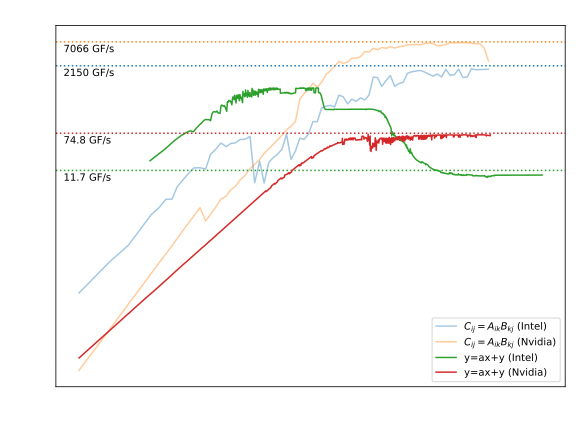
Goals
- Can the solvers be ported?
- Can we preserve the Fortran codebase?
- Will results be bit-reproducible?
- Can we retain CPU performance
Challenges
MOM6 is a community code used in ongoing research and operational tasks. This creates several constraints.
- Fairly large Fortran codebase (~200k LoC)
- Answer changes disrupt ongoing research activities
- Many solvers, each algorithmically different
- Solvers support dozens of customizations
Can it be ported to GPUs without disruption?
Breakdown
- Kernels may be over 1000 LoC
if-blocks manage model features- Heavy use of derived types, even objects
- Kernels contain function calls
GPU Programming
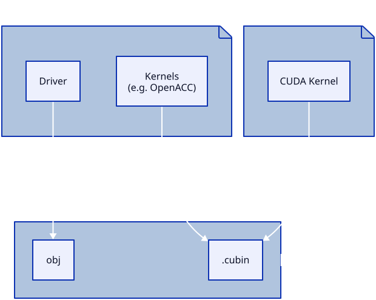
Separate solver into units of work (i.e. kernels)
Choose your Kernel
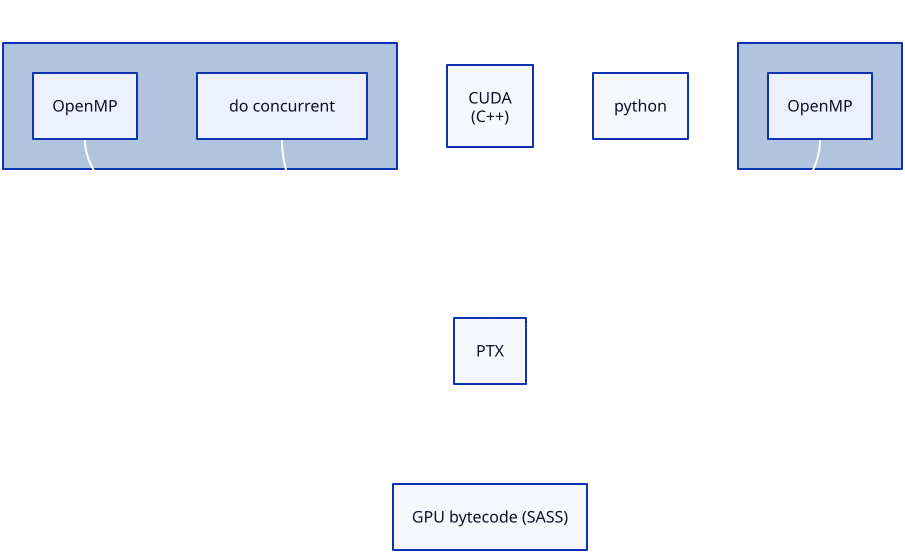
Many ways to define kernels, each with pros and cons
do concurrent
Fortran language feature to promote loop parallelization. Execution may occur in any order:
|
⇒ | |
Results cannot depend on loop order or system state:
a(i) = a(i-1) + 1sum = sum + a(i)print *, i
Why do concurrent?
- Single Codebase
-
Can generate serial, threaded, or GPU bytecode
- Platform Independence
-
Compilers can target their respective platforms: NVIDA to CUDA, AMD to ROCm, ...
- Algorithmic Precision
-
Loop independence lets compilers make better optimization choices.
NVIDIA's do concurrent
nvfortran accepts a "do concurrent"
block
do concurrent (k=1:nz, j=js:je, I=Isq:Ieq)
u_bc_accel(I,j,k) = CAu_pred(I,j,k) + PFu(I,j,k) + diffu(I,j,k)
enddoand translates it to an OpenACC kernel.
!$acc parallel loop collapse(3) vector_length(128)
do k=1,nz ; do j=js,je ; do I=Isq,Ieq
u_bc_accel(I,j,k) = CAu_pred(I,j,k) + PFu(I,j,k) + diffu(I,j,k)
enddo ; enddo ; enddo
!$acc end parallel loopCUDA threads per block (or gang) is set to 128.
Nested do concurrent
Nested do concurrent can launch with dynamic grid and
block geometries.
do concurrent (j=jsh:jeh)
do concurrent (k=1:nz, I=ish-1:ieh)
u_cor(I,j,k) = u(I,j,k) + du(I,j) * visc_rem_u(I,j,k)
enddo
enddoFor a 256 × 256 × 100 domain:
- Grid: (804,66,1)
- Block: (32,4,1)
804 × 32 comprises the i-k loop, 66 × 4 the
j loop
A second example
256 × 256 × 100 kernel geometry is (9,64,1) × (32,4,1)
do concurrent (j=js:je)
do k=1,nz
do concurrent (I=is-1:ie)
uhbt(I,j) = uhbt(I,j) + uh0(I,j,k)
ubt(I,j) = ubt(I,j) + CS%frhatu(I,j,k) * u_uh0(I,j,k)
enddo
enddo
enddo- CPU cacheing prefers the inner
i-loop - GPU moves serial
kinside, sets up blocks
nj = 64*4 = 256
ni = 9*32 = 288 <- 257 rounded up to next 32-step
Kernel Dispatch
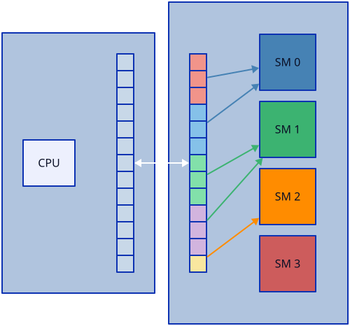
GPU distributes gangs over SMs
Memory Management
Move memory to device
!$omp target enter data map(to: a, b) map(alloc: c)Execute kernel
do concurrent (k=1:nk, j=1:nj, i=1:ni)
a(i,j,k) = b(i,j,k) + c(i,j,k)
enddoReturn result to host
!$omp target exit data map(from: c) map(delete: a, b)Strategy
- Data transfers are expensive
- Move the entire problem to GPU
- Shared/unified memory is unreliable
- Manual memory management
- MOM codebase is large and complex
- do concurrent where we can
- OpenMP / OpenACC where we must
Double Gyre Test
|
Dycore Performance
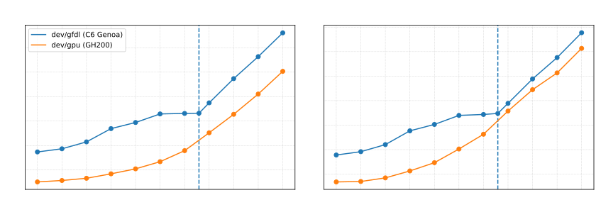
Performance is comparable to 96-core CPU with minimal code changes
Bit Reproducibility

Research and operations can continue uninterrupted
Dycore Breakdown
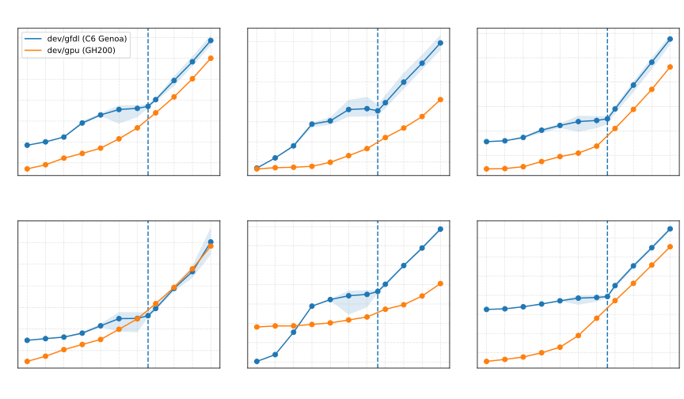
FMS MPI Support
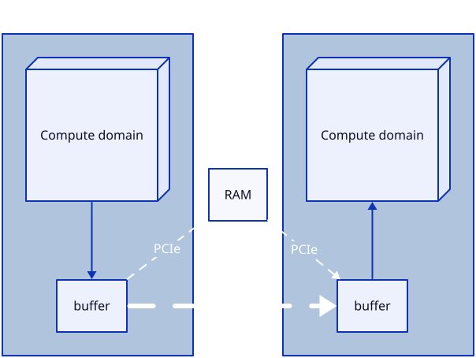
Message passing FMS buffers are on GPUs
Dycore Scaling
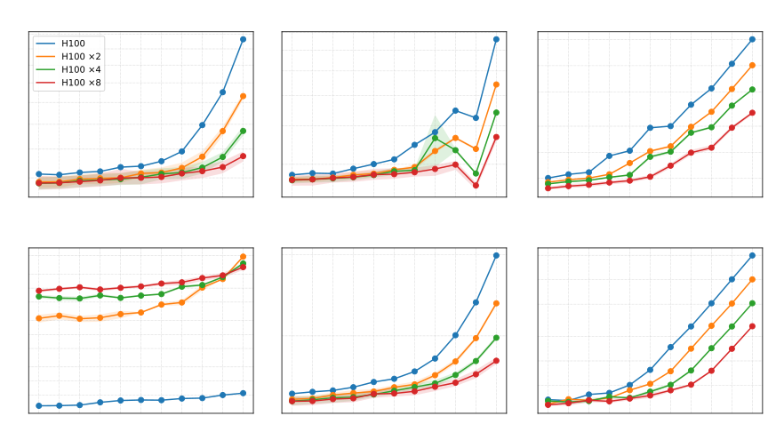
We are seeing scalability with GPU over MPI
Dycore Efficiency
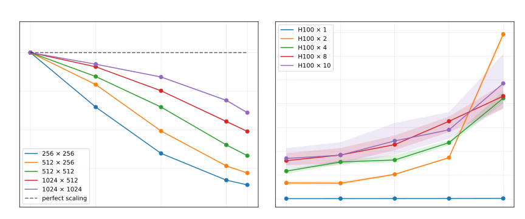
We are seeing scalability with GPU over MPI
Module scaling
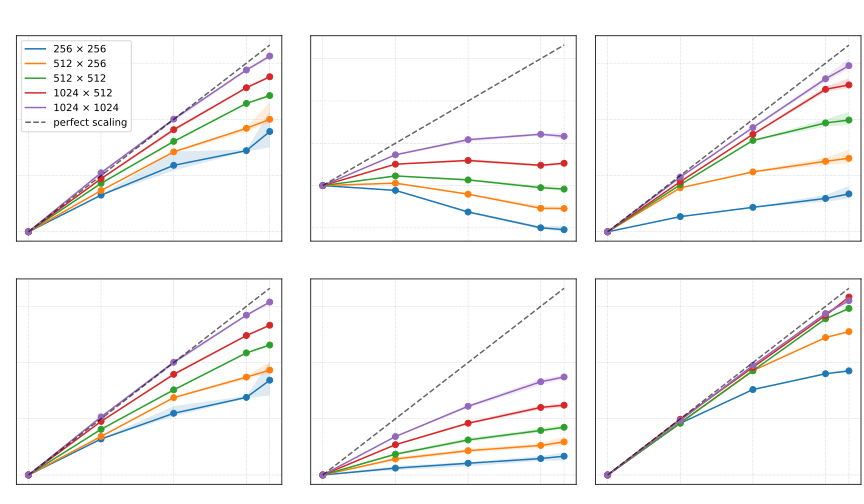
Module efficiency
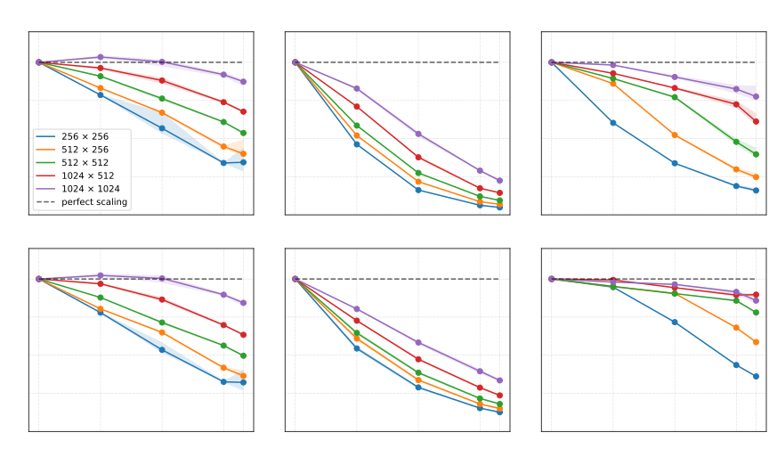
Blocking
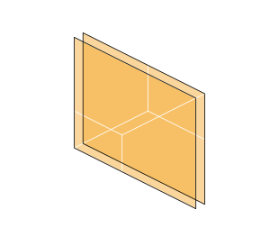 CPU cache blocks |
GPU block |
Wrapping solvers in "block loops" permit platform-specific cacheing
Block Performance
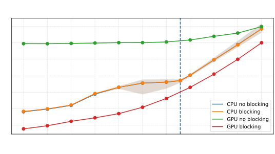
Local arrays
No support yet for local(array), but OpenMP works
!$omp target teams loop collapse(2) private(c1)
do j=js,je ; do i=is,ie ; if (mask(i,j) > 0.) then
b_denom_1 = h(i,j,1) + a(i,j,1)
b1 = 1. / (b_denom_1 + a(i,j,2))
d1 = b_denom_1 * b1
visc_rem(i,j,1) = b1 * h(i,j,1)
do k=2,nz
c1(k) = a(i,j,k) * b1
b_denom_1 = h(i,j,k) + (a(i,j,k) * d1)
b1 = 1. / (b_denom_1 + a(i,j,k+1))
d1 = b_denom_1 * b1
visc_rem(i,j,k) = (h(i,j,k) + a(i,j,k) * visc_rem(i,j,k-1)) * b1
enddo
do k=nz-1,1,-1
visc_rem(i,j,k) = visc_rem(i,j,k) + c1(k+1) * visc_rem(i,j,k+1)
enddo
endif ; enddo ; enddoDerived Types
Derived types and their arrays are handled separately.
!$omp target enter data map(to: G)
!$omp target enter data map(to: G%dxT, G%dxCu, G%dxCv, G%dxBu)Care must be taken when updating derived types
! Transfer CS and its scalars
!$omp target enter data map(to CS)
! Set up CS arrays
!$omp target enter data map(to: CS%a_u, CS%a_v)
!$omp target enter data map(to: CS%h_u, CS%h_v)
! This would overwrite CS pointers and lose array data!
!$omp target update to(CS)No Objects on GPUs
Dynamic object-oriented constructs are volatile
class(EOS_base), allocatable :: typeprocedure(i_density), deferred :: densityreal elemental function density_linear(this, T, S, p)
class(EOS), intent(in) :: this
real, intent(in) :: T, S, p
density_elem_linear = this%Rho_T0_S0 + this%dRho_dT * T &
+ this%dRho_dS * S + this%dRho_dp * p
end function density_linearBut this is not a problem unique to Fortran.
Async kernels
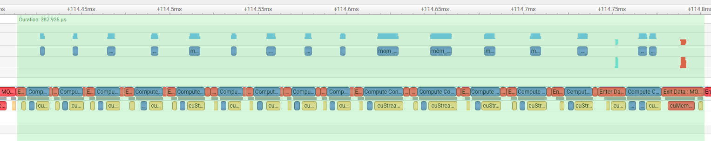
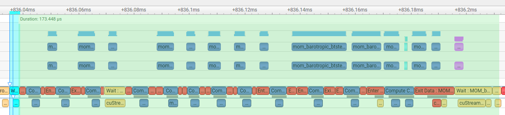
Using async allows kernel overhead of one kernel to
overlap with the work of another.
Async speedup
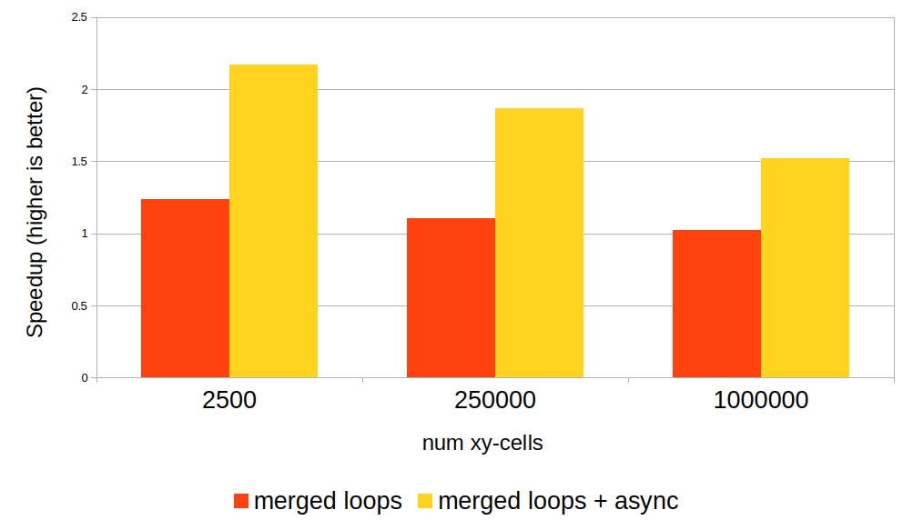
Summary
- Can we preserve codebase?
-
Yes!
do concurrentwith OpenMP is a viable model - Bit reproducible?
-
Yes! Operational work can continue
- Retain CPU performance?
-
Yes! And with GPU speedups
Fortran on the GPU
- It's working. Numbers are competitive and still improving.
- Reproducible. Operational models can continue.
- Compilers are only getting better.
MOM6 can run on GPUs using standard Fortran constructs. We expect further improvements as we gain proficiency with the algorithms and technology.